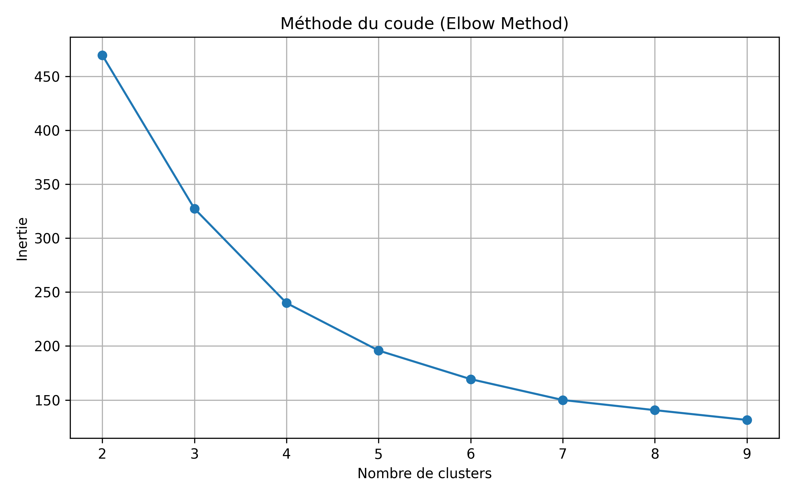
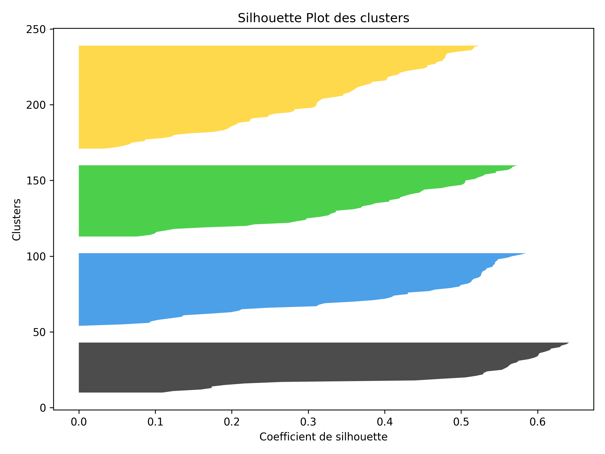
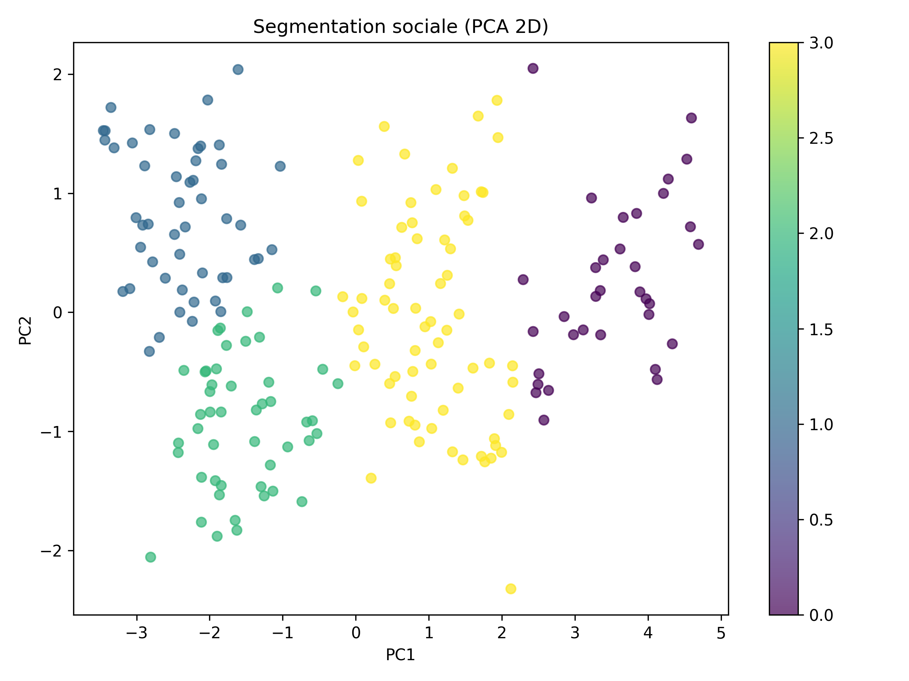
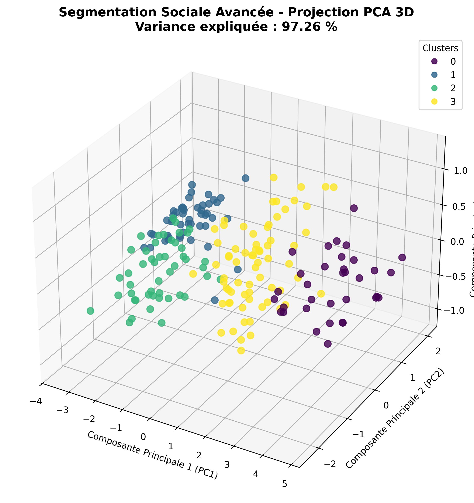
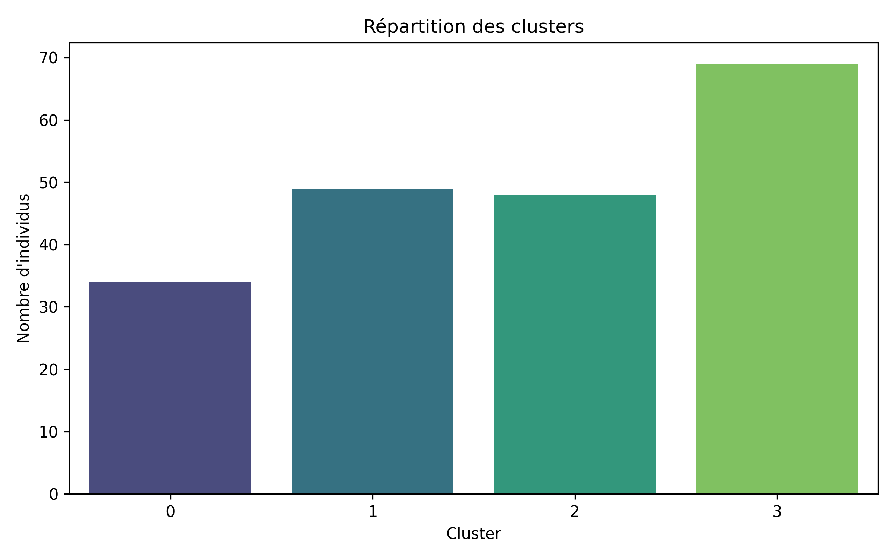
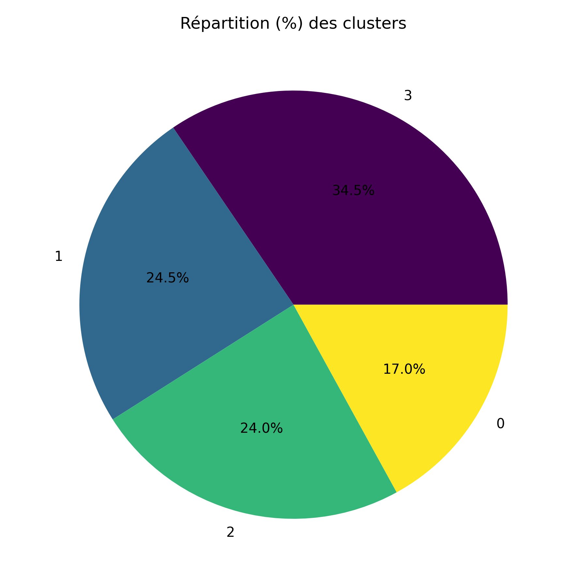
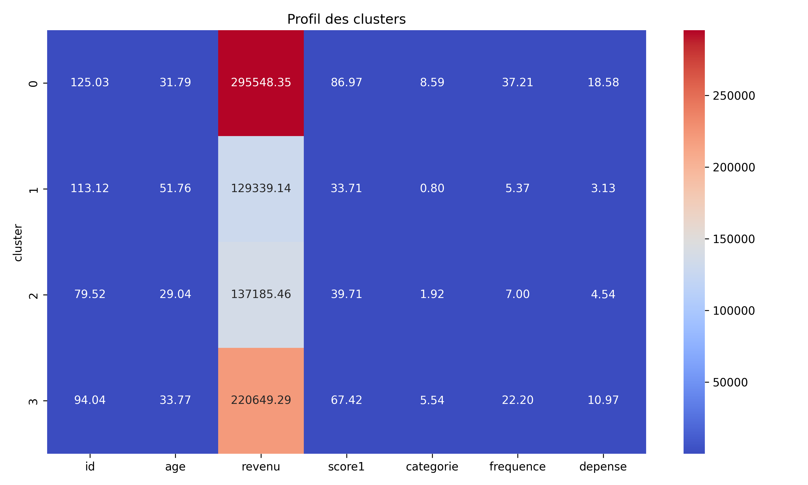

0.3775
Le score de silhouette mesure la qualité de la segmentation obtenue par l'algorithme K-Means. Dans cette étude, le score obtenu est de 0.3775. Cette valeur indique que les clusters présentent une séparation raisonnable. Les individus appartenant à un même groupe sont relativement similaires tandis que les groupes restent suffisamment distincts.

La méthode du coude permet de déterminer le nombre optimal de clusters. On observe une diminution progressive de l'inertie lorsque le nombre de clusters augmente. Le point de rupture observé sur la courbe justifie le choix de k = 4, qui représente un bon compromis entre précision et simplicité du modèle.

Le graphique de silhouette montre la qualité de classification des individus dans chaque cluster. La majorité des observations possèdent des coefficients positifs, ce qui indique une affectation cohérente aux groupes identifiés. L'absence de fortes valeurs négatives confirme que peu d'individus sont mal classés.

Cette projection ACP (Analyse en Composantes Principales) en deux dimensions permet de visualiser la structure globale des données. Les couleurs représentent les différents clusters obtenus par K-Means. On observe une séparation visible entre plusieurs groupes, ce qui confirme l'existence de profils socio-économiques distincts.

La projection ACP en trois dimensions conserve davantage d'informations que la représentation 2D. Elle permet d'observer plus clairement la séparation entre les clusters et facilite l'analyse visuelle des comportements similaires. La variance expliquée affichée sur le graphique constitue un indicateur de la qualité de représentation des données originales.

Le diagramme en barres présente le nombre d'individus appartenant à chaque cluster. Une répartition relativement équilibrée indique que l'algorithme n'a pas concentré excessivement les observations dans un seul groupe. Cela renforce la stabilité de la segmentation obtenue.

Le diagramme circulaire représente les proportions de chaque cluster dans la population étudiée. Cette visualisation facilite l'identification des segments majoritaires et minoritaires. Elle permet également d'apprécier l'importance relative de chaque profil social identifié.

La carte thermique présente les moyennes des variables pour chaque cluster. Les couleurs chaudes indiquent généralement des valeurs élevées tandis que les couleurs froides correspondent à des valeurs faibles. Cette visualisation met en évidence les différences de revenus, de dépenses, d'âge ou de fréquence entre les groupes et facilite leur interprétation.